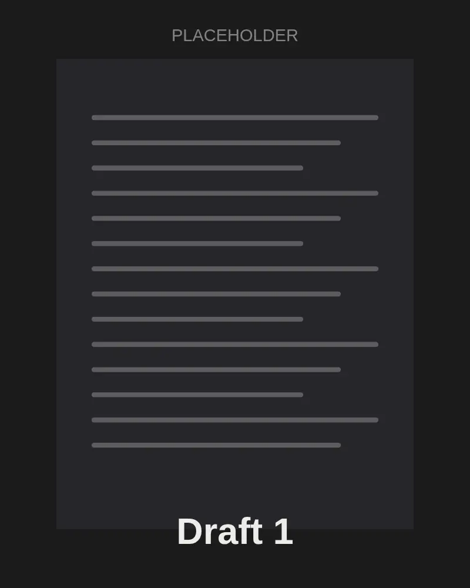
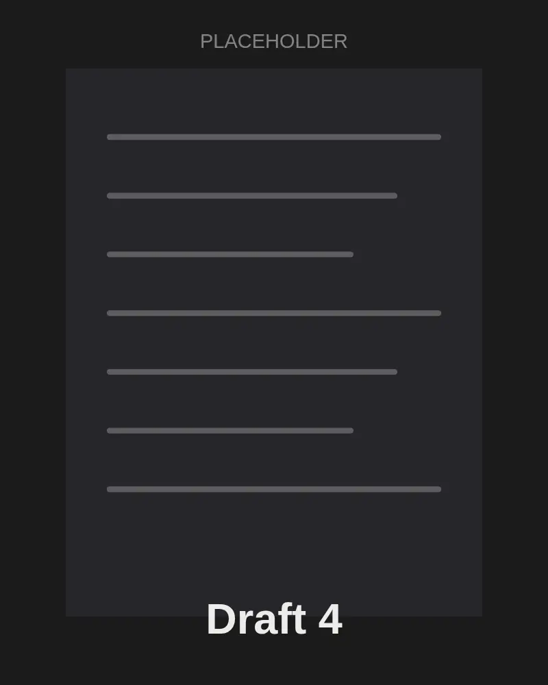

Our Opinions Guest Essay · Demo
The Second Draft
Most of what a reader sees was decided after the first version failed. That is where the argument lives.
Every essay you have read in a newspaper arrived looking finished. The sentences sit in order, the argument advances, and the conclusion feels as if it had been waiting at the end of the road all along. That calm is a performance. Behind it are versions that went nowhere, paragraphs that argued the opposite and an opening that was rewritten until it stopped apologizing.
We hide the drafts because we think they make the writer look unsure. I think they do the opposite. A draft shows the moment an idea met resistance and changed shape, and that moment is usually the most persuasive part of the whole process.


Look at the first and the fourth version of the same opening. The first one explains. The fourth one asks the reader to notice something. Nothing about the facts changed between them. What changed was the writer's sense of who was on the other side of the page.
Editors know this rhythm well. It rarely runs in a straight line, but it does have stages, and each stage asks a different question of the work.
- Idea
- Draft
- Revise
- Ship
The stages look tidy in a diagram. In practice the arrow from revising back to drafting gets used far more than the one that points to publishing. Here is one paragraph moving through all four.
By the sixth version the paragraph is shorter, plainer and much harder to disagree with. Most of the cuts were not about style. They removed claims the writer could not yet support.
Marked-up pages tell the same story from the editor's side: questions in the margin, arrows that move a sentence to where it belongs, a single word circled because it promises more than the evidence delivers.
Choosing which argument leads is the hardest call in the whole process. Each of the three had a claim on the top of the page, and each made the other two read differently depending on where it sat.
What finally decided it was not which point was strongest, but which one a skeptical reader would need to accept before the others could land.
Readers will never see most of this, and that is fine. But a little more of it on the page would make the argument more honest about how it was made, and, I suspect, more convincing.